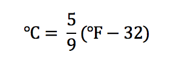

Problem made by Lockheed Martin, is CodeQuest 2017 Problem 4
This problem has a difficulty of 25
Talking about the weather has been one of the most common small-talk subjects since the beginning of time. “Whew, can you believe this heat wave? It’s been 38 degrees for days!” Wait, what? Anyone who lives in Texas should know better than to complain when the temperature gets above 38 degrees. Or should they? It all depends on the temperature scale!
Here in the United States, we still use the Fahrenheit temperature scale, while most of the rest of the world uses the Celsius scale. Just like talking to people who speak different languages, if we want to be able to talk about the weather with someone who uses a different scale, we need a translator. That’s where you come in!
Your job is to write a temperature translator program. Here is a formula that relates a temperature measured in Fahrenheit (F) to a temperature measured in Celsius (C):

The first line of the file Prob04.in.txt will contain a positive integer T denoting the number of test cases that follow. Each test case will have the following input:
• The first line of each test case will contain a positive integer N denoting the number of temperature conversions that follow.
• The next N lines will contain a single temperature value in the following format:
[Number] [Scale]
The number and the scale will be separated by a single space. The number could have a decimal point, but will have no more than one digit after the decimal. The scale will either be C or F.
2
3
0 C
212 F
50.0 C
4
98.6 F
-6 C
40.1 C
123.4 F
Your program should convert the temperature to the other scale and print it out for easy reading. Your output lines should follow the following format:
[OriginalNumber] [OriginalScale] = [ConvertedNumber] [NewScale]
Your original number should appear just as it is from the input file, but your converted number should always be printed to the nearest tenth. See Appendix A for more information on how you should round.
0 C = 32.0 F
212 F = 100.0 C
50.0 C = 122.0 F
98.6 F = 37.0 C
-6 C = 21.2 F
40.1 C = 104.2 F
123.4 F = 50.8 C